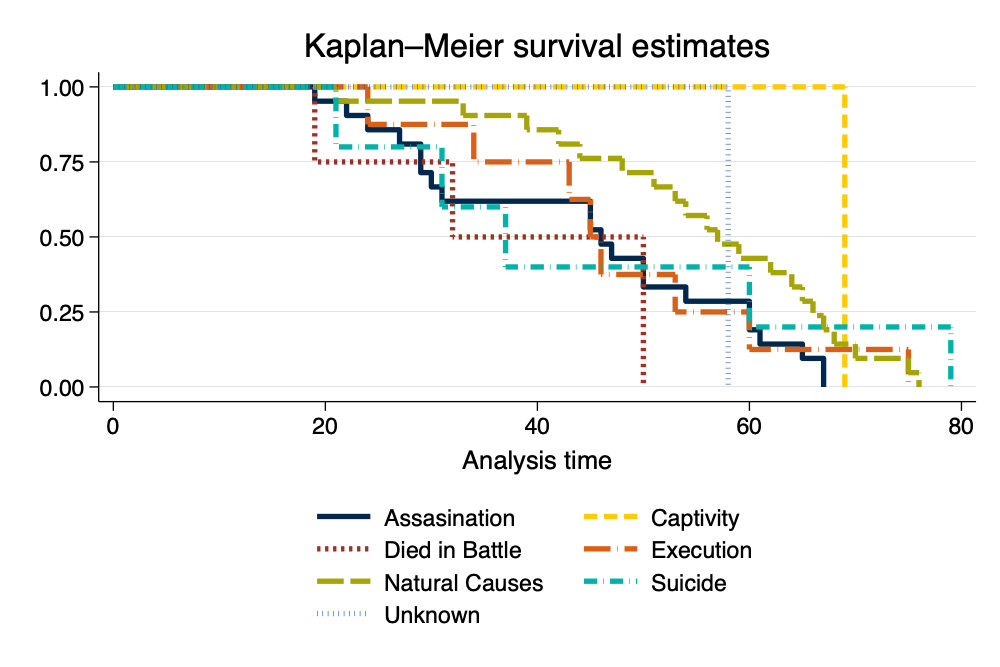
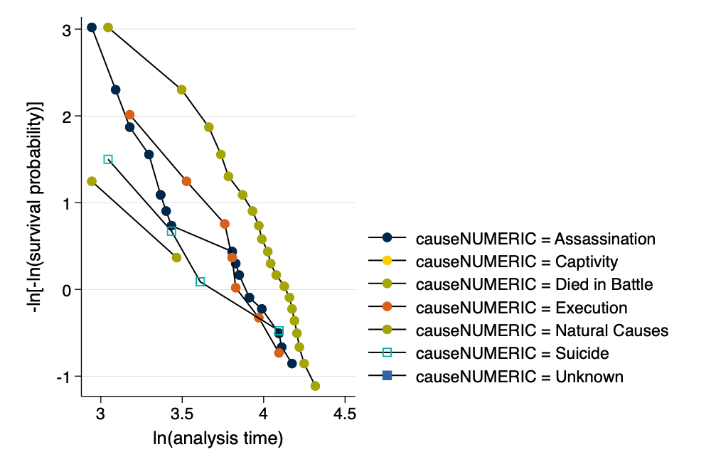

{width=50%}
{width=50%}This example uses data on the ages of death of Roman Emperors. Sources for this data are unclear, but it appears that the original source is http://www.roman-emperors.org/ via https://github.com/rfordatascience/tidytuesday/tree/master/data/2019/2019-08-13.
. clear all
. import delimited "https://raw.githubusercontent.com/agrogan1/newstuff/master/categorical/survival-analysis-and-event-history > /emperors/emperors.csv" (encoding automatically selected: ISO-8859-1) (16 vars, 68 obs)
Remember that Stata works with dates by converting them to the number of days since January 1, 1960.
. * we can't use the date() function . * because it does not work . * with dates prior to 100AD
. * generate birthdate = date(birth, "YMD")
. * generate deathdate = date(death, "YMD")
. generate birthyear = real(substr(birth, 1, 4)) // convert first 4 characters to real number (5 missing values generated)
. generate deathyear = real(substr(death, 1, 4)) // convert first 4 characters to real number
. * browse name name_full birth birthyear death deathyear
. generate age = deathyear - birthyear (5 missing values generated)
. * need to recalculate age for those born in BCE
. encode cause, generate(causeNUMERIC) // numeric version of cause of death
. codebook causeNUMERIC if age != . // show values of causeNUMERIC for non missing ages
──────────────────────────────────────────────────────────────────────────────────────────────────────────────────────────────
causeNUMERIC (unlabeled)
──────────────────────────────────────────────────────────────────────────────────────────────────────────────────────────────
Type: Numeric (long)
Label: causeNUMERIC
Range: [1,7] Units: 1
Unique values: 7 Missing .: 0/63
Tabulation: Freq. Numeric Label
23 1 Assassination
1 2 Captivity
4 3 Died in Battle
8 4 Execution
21 5 Natural Causes
5 6 Suicide
1 7 Unknown
. encode rise, generate(riseNUMERIC) // numeric version of cause of death
. codebook riseNUMERIC // show values of riseNUMERIC
──────────────────────────────────────────────────────────────────────────────────────────────────────────────────────────────
riseNUMERIC (unlabeled)
──────────────────────────────────────────────────────────────────────────────────────────────────────────────────────────────
Type: Numeric (long)
Label: riseNUMERIC
Range: [1,8] Units: 1
Unique values: 8 Missing .: 0/68
Tabulation: Freq. Numeric Label
7 1 Appointment by Army
4 2 Appointment by Emperor
3 3 Appointment by Praetorian Guard
7 4 Appointment by Senate
35 5 Birthright
1 6 Election
1 7 Purchase
10 8 Seized Power
stset The Data We need to stset the data so that Stata knows that this is survival data with special characteristics relevant to survival analysis. For those of you have used other commands that attach special characteristics to the data, this is similar to using svyset for complex survey data, xtset for panel data, or even to the mi suite of commands for multiple imputation.
The most commonly used syntax is something like stset timevar, failure(failvar) id(id) 1
There are many ways to specify
failvar, we outline the most straightforward. Consult Stata help for your exact situation.
. stset age // stset the data
Survival-time data settings
Failure event: (assumed to fail at time=age)
Observed time interval: (0, age]
Exit on or before: failure
──────────────────────────────────────────────────────────────────────────
68 total observations
5 event time missing (age>=.) PROBABLE ERROR
2 observations end on or before enter()
──────────────────────────────────────────────────────────────────────────
61 observations remaining, representing
61 failures in single-record/single-failure data
2,984 total analysis time at risk and under observation
At risk from t = 0
Earliest observed entry t = 0
Last observed exit t = 79
\[S(t)=Pr(T>t)\]
. sts graph, scheme(michigan) ci // survival graph with CI's
Failure _d: 1 (meaning all fail)
Analysis time _t: age
. graph export mysurvival0.png, width(1000) replace file mysurvival0.png saved as PNG format
{width=50%}
. sts graph, by(causeNUMERIC) scheme(michigan) // survival curve by cause of death
Failure _d: 1 (meaning all fail)
Analysis time _t: age
. graph export mysurvival1.png, width(1000) replace file mysurvival1.png saved as PNG format
{width=50%}
As an opportunity to take a closer look at the graph, we take a look at cause of death by age for those who died in battle.
. tabulate age causeNUMERIC if causeNUMERIC == 3
│ causeNUMER
│ IC
age │ Died in B │ Total
───────────┼───────────┼──────────
19 │ 1 │ 1
32 │ 1 │ 1
50 │ 2 │ 2
───────────┼───────────┼──────────
Total │ 4 │ 4
We can then work to make the legend more informative.
. sts graph, by(causeNUMERIC) scheme(michigan) ///
> legend(pos(6) col(2) order(1 "Assasination" 2 "Captivity" 3 "Died in Battle" ///
> 4 "Execution" 5 "Natural Causes" 6 "Suicide" 7 "Unknown")) // survival curve w better legend
Failure _d: 1 (meaning all fail)
Analysis time _t: age
. graph export mysurvival2.png, width(1000) replace file mysurvival2.png saved as PNG format
{width=50%}
\(h(t)\) the rate of occurrence.
\[ h(t) = \lim_{\delta\to\infty} \frac{\text{probability of having an event before time } t + \delta}{\delta} \]
This definition per Johnson & Shih (2007).
\[ h(t) = h_0(t)e^{\beta_1 x1 + \beta_2 x_2 + etc.} \]
We don't directly estimate the hazard, but estimate the effect of covariates on the hazard.
. stcox ib5.causeNUMERIC ib5.riseNUMERIC // Cox model
Failure _d: 1 (meaning all fail)
Analysis time _t: age
Iteration 0: Log likelihood = -194.21354
Iteration 1: Log likelihood = -183.48964
Iteration 2: Log likelihood = -183.01318
Iteration 3: Log likelihood = -183.00966
Iteration 4: Log likelihood = -183.00966
Refining estimates:
Iteration 0: Log likelihood = -183.00966
Cox regression with Breslow method for ties
No. of subjects = 61 Number of obs = 61
No. of failures = 61
Time at risk = 2,984
LR chi2(13) = 22.41
Log likelihood = -183.00966 Prob > chi2 = 0.0494
─────────────────────────────────┬────────────────────────────────────────────────────────────────
_t │ Haz. ratio Std. err. z P>|z| [95% conf. interval]
─────────────────────────────────┼────────────────────────────────────────────────────────────────
causeNUMERIC │
Assassination │ 2.903395 1.087888 2.84 0.004 1.393044 6.051281
Captivity │ .6157704 .7019255 -0.43 0.671 .0659359 5.750634
Died in Battle │ 3.190409 1.898109 1.95 0.051 .9941017 10.2391
Execution │ 1.262384 .5780177 0.51 0.611 .5145707 3.096976
Suicide │ 1.420734 .9364432 0.53 0.594 .3903581 5.170852
Unknown │ .9040191 .9428808 -0.10 0.923 .1170536 6.981847
│
riseNUMERIC │
Appointment by Army │ .5067648 .252628 -1.36 0.173 .1907536 1.346295
Appointment by Emperor │ .7952664 .5753412 -0.32 0.752 .1926215 3.283375
Appointment by Praetorian Guard │ .2160533 .1461524 -2.27 0.024 .057379 .8135208
Appointment by Senate │ .2247029 .1196918 -2.80 0.005 .0791046 .6382865
Election │ 1.07545 1.123459 0.07 0.944 .1388001 8.332792
Purchase │ .5483916 .596986 -0.55 0.581 .0649325 4.631477
Seized Power │ .4053515 .1654931 -2.21 0.027 .1821005 .9023027
─────────────────────────────────┴────────────────────────────────────────────────────────────────
. stcurve, survival at(causeNUMERIC=(1(1)7)) /// > scheme(michigan) // basic survival curve by causeNUMERIC note: function evaluated at specified values of selected covariates and overall means of other covariates (if any).
. graph export mycox1.png, width(1000) replace file mycox1.png saved as PNG format
{width=50%}
. stcurve, survival ///
> at(causeNUMERIC=(1(1)7)) ///
> caption("Roman Emperors Data") ///
> legend(order(1 "Assasination" 2 "Captivity" 3 "Died in Battle" ///
> 4 "Execution" 5 "Natural Causes" 6 "Suicide" 7 "Unknown")) ///
> scheme(michigan) // more nicely formatted survival curve
note: function evaluated at specified values of selected covariates and overall means of other covariates (if any).
. graph export mycox2.png, width(1000) replace file mycox2.png saved as PNG format
 {width=50%}
{width=50%}
. estat phtest, detail // formal test of PH assumption
Test of proportional-hazards assumption
Time function: Analysis time
─────────────┬──────────────────────────────────────────
│ rho chi2 df Prob>chi2
─────────────┼──────────────────────────────────────────
1.causeNUM~C │ -0.04848 0.17 1 0.6819
2.causeNUM~C │ 0.00996 0.01 1 0.9397
3.causeNUM~C │ 0.01796 0.02 1 0.8869
4.causeNUM~C │ -0.15154 1.62 1 0.2032
5b.causeNU~C │ . . 1 .
6.causeNUM~C │ -0.31746 10.60 1 0.0011
7.causeNUM~C │ 0.13799 1.11 1 0.2912
1.riseNUME~C │ 0.18269 2.18 1 0.1399
2.riseNUME~C │ 0.30901 8.28 1 0.0040
3.riseNUME~C │ 0.10627 0.77 1 0.3790
4.riseNUME~C │ 0.10649 0.95 1 0.3304
5b.riseNUM~C │ . . 1 .
6.riseNUME~C │ 0.12455 0.91 1 0.3402
7.riseNUME~C │ 0.18581 2.10 1 0.1477
8.riseNUME~C │ 0.23405 3.44 1 0.0638
─────────────┼──────────────────────────────────────────
Global test │ 21.90 13 0.0569
─────────────┴──────────────────────────────────────────
. stphplot, by(causeNUMERIC) scheme(michigan) // graphical test of PH assumption
Failure _d: 1 (meaning all fail)
Analysis time _t: age
. graph export ph.png, width(1000) replace file ph.png saved as PNG format
{width=50%}
Had the proportional hazards assumption been violated, we could correct for this violation in one of two ways:
age) with the variable violating the assumption.e.g. stcox ib5.causeNUMERIC age#ib5.riseNUMERIC.
Note: In this relatively small sample this command fails to converge, perhaps because of sample size; or perhaps because there is no underlying violation of the proportional hazards assumption.
, strata(varname) option to stratify on the variable violating the assumption.Note that the command below provides results, but does not provide parameter estimates for the variable on which we are stratifying,
riseNUMERIC.
. stcox ib5.causeNUMERIC, strata(riseNUMERIC)
Failure _d: 1 (meaning all fail)
Analysis time _t: age
Iteration 0: Log likelihood = -110.21173
Iteration 1: Log likelihood = -106.78694
Iteration 2: Log likelihood = -106.44767
Iteration 3: Log likelihood = -106.33876
Iteration 4: Log likelihood = -106.30024
Iteration 5: Log likelihood = -106.28627
Iteration 6: Log likelihood = -106.28115
Iteration 7: Log likelihood = -106.27928
Iteration 8: Log likelihood = -106.27859
Iteration 9: Log likelihood = -106.27833
Iteration 10: Log likelihood = -106.27824
Iteration 11: Log likelihood = -106.27821
Iteration 12: Log likelihood = -106.27819
Iteration 13: Log likelihood = -106.27819
Iteration 14: Log likelihood = -106.27819
Iteration 15: Log likelihood = -106.27819
Iteration 16: Log likelihood = -106.27819
Iteration 17: Log likelihood = -106.27819
Iteration 18: Log likelihood = -106.27819
Iteration 19: Log likelihood = -106.27819
Refining estimates:
Iteration 0: Log likelihood = -106.27819
Iteration 1: Log likelihood = -106.27819
Iteration 2: Log likelihood = -106.27819
Iteration 3: Log likelihood = -106.27819
Iteration 4: Log likelihood = -106.27819
Iteration 5: Log likelihood = -106.27819
Iteration 6: Log likelihood = -106.27819
Iteration 7: Log likelihood = -106.27819
Iteration 8: Log likelihood = -106.27819
Iteration 9: Log likelihood = -106.27819
Iteration 10: Log likelihood = -106.27819
Iteration 11: Log likelihood = -106.27819
Iteration 12: Log likelihood = -106.27819
Iteration 13: Log likelihood = -106.27819
Iteration 14: Log likelihood = -106.27819
Iteration 15: Log likelihood = -106.27819
Iteration 16: Log likelihood = -106.27819
Stratified Cox regression with Breslow method for ties
Strata variable: riseNUMERIC
No. of subjects = 61 Number of obs = 61
No. of failures = 61
Time at risk = 2,984
LR chi2(6) = 7.87
Log likelihood = -106.27819 Prob > chi2 = 0.2480
────────────────┬────────────────────────────────────────────────────────────────
_t │ Haz. ratio Std. err. z P>|z| [95% conf. interval]
────────────────┼────────────────────────────────────────────────────────────────
causeNUMERIC │
Assassination │ 2.055452 .7768999 1.91 0.057 .9798928 4.311578
Captivity │ 6.98e-16 2.32e-08 -0.00 1.000 0 .
Died in Battle │ 1.888973 1.130025 1.06 0.288 .5848147 6.101451
Execution │ 1.581336 .7416243 0.98 0.328 .6307 3.96484
Suicide │ 1.130873 .808074 0.17 0.863 .2787286 4.588243
Unknown │ .8796497 .9202359 -0.12 0.902 .1131969 6.835731
────────────────┴────────────────────────────────────────────────────────────────
Johnson, L. L., & Shih, J. H. (2007). CHAPTER 20 - An Introduction to Survival Analysis (J. I. Gallin & F. P. Ognibene, eds.). https://doi.org/https://doi.org/10.1016/B978-012369440-9/50024-4
failvair is often something like died.↩